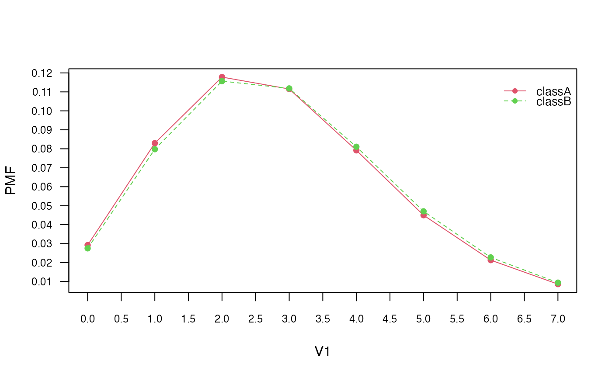

1) Introduction
The naivebayes package offers a comprehensive set of
functions that implement specialized versions of the Naïve Bayes
classifier. In this article, we explore these functions and provide a
detailed overview of their basic usage.
The package provides five key functions that cater to different types of data:
bernoulli_naive_bayes(): Ideal for binary data, this function is specifically tailored to handle situations where the features are binary in nature, taking values of either 0 or 1. It effectively models the relationship between these binary features and the class labels.multinomial_naive_bayes(): This function is specifically designed for multinomial data. It is well-suited for cases where the features are discrete and have multiple categories. For example, it is commonly used in text classification tasks, where word counts are utilized as features.poisson_naive_bayes(): This function is specifically designed for count data. It is well-suited for scenarios where the features represent counts or frequencies. By assuming a Poisson distribution for the features, this function effectively models the relationship between the counts and the class labels.gaussian_naive_bayes(): Suitable for continuous data, this function assumes that the features follow a Gaussian (normal) distribution. It is commonly used when dealing with continuous numerical features, and it models the relationship between these features and the class labels.nonparametric_naive_bayes()This function introduces a nonparametric variant of the Naïve Bayes classifier. Unlike the specialized versions mentioned above, it does not make any assumptions regarding the specific distribution of the continuous features. Instead, it employs kernel density estimation to estimate the class conditional probabilities and feature distributions in a nonparametric manner. This allows for more flexible modeling and can be particularly useful when dealing with data that deviates from typical parametric assumptions.
Throughout this article, we will dive into each of these functions providing illustrative examples to demonstrate their practical usage. By the end, you will have a solid understanding of how to leverage these specialized versions of the Naïve Bayes classifier to tackle various types of data and classification problems.
We will also show equivalent calculations using the general
naive_bayes() function, allowing you to compare and
understand the differences between the specialized and general
approaches.
2) Bernoulli Naive Bayes
The Bernoulli Naive Bayes classifier is suitable for binary data. To
demonstrate its usage, we start by simulating a dataset with binary
features. We then train the Bernoulli Naive Bayes model using the
bernoulli_naive_bayes() function.
Simulate data:
## naivebayes 1.0.0 loaded## For more information please visit:## https://majkamichal.github.io/naivebayes/
cols <- 10 ; rows <- 100 ; probs <- c("0" = 0.4, "1" = 0.1)
M <- matrix(sample(0:1, rows * cols, TRUE, probs), nrow = rows, ncol = cols)
y <- factor(sample(paste0("class", LETTERS[1:2]), rows, TRUE, prob = c(0.3, 0.7)))
colnames(M) <- paste0("V", seq_len(ncol(M)))Train the Bernoulli Naive Bayes model:
laplace <- 0.5
bnb <- bernoulli_naive_bayes(x = M, y = y, laplace = laplace) # M has to be a matrix
summary(bnb)##
## ============================ Bernoulli Naive Bayes =============================
##
## - Call: bernoulli_naive_bayes(x = M, y = y, laplace = laplace)
## - Laplace: 0.5
## - Classes: 2
## - Samples: 100
## - Features: 10
## - Prior probabilities:
## - classA: 0.4
## - classB: 0.6
##
## --------------------------------------------------------------------------------## classA classB
## [1,] 0.1137533 0.88624671
## [2,] 0.9114579 0.08854215
## [3,] 0.6855916 0.31440841
## [4,] 0.2994114 0.70058855
## [5,] 0.3185296 0.68147042
## [6,] 0.3185296 0.68147042## classA classB
## [1,] 0.1137533 0.88624671
## [2,] 0.9114579 0.08854215
## [3,] 0.6855916 0.31440841
## [4,] 0.2994114 0.70058855
## [5,] 0.3185296 0.68147042
## [6,] 0.3185296 0.68147042
# Visualise marginal distributions
plot(bnb, which = "V1", prob = "marginal")
# Obtain model coefficients
coef(bnb)## classA:0 classA:1 classB:0 classB:1
## V1 0.8170732 0.1829268 0.8114754 0.18852459
## V2 0.7439024 0.2560976 0.7459016 0.25409836
## V3 0.7682927 0.2317073 0.9262295 0.07377049
## V4 0.6951220 0.3048780 0.8606557 0.13934426
## V5 0.7195122 0.2804878 0.7786885 0.22131148
## V6 0.8170732 0.1829268 0.7295082 0.27049180
## V7 0.7439024 0.2560976 0.7622951 0.23770492
## V8 0.7926829 0.2073171 0.8442623 0.15573770
## V9 0.8658537 0.1341463 0.7459016 0.25409836
## V10 0.7682927 0.2317073 0.8114754 0.18852459Equivalent calculation with naive_bayes function:
# It is made sure that the columns are factors with the 0-1 levels)
df <- as.data.frame(lapply(as.data.frame(M), factor, levels = c(0, 1)))
# sapply(df, class)
nb <- naive_bayes(df, y, laplace = laplace)
head(nb %prob% df)## classA classB
## [1,] 0.1137533 0.88624671
## [2,] 0.9114579 0.08854215
## [3,] 0.6855916 0.31440841
## [4,] 0.2994114 0.70058855
## [5,] 0.3185296 0.68147042
## [6,] 0.3185296 0.681470423) Multinomial Naive Bayes
Next, we explore the Multinomial Naive Bayes classifier. We simulate
a dataset with multinomial features and train the model using the
multinomial_naive_bayes() function. We discuss the summary
of the model, perform classification, compute posterior probabilities,
and examine parameter estimates. Note that this specialized model is
not available in the general naive_bayes()
function.
Simulate data:
set.seed(1)
cols <- 3 # words
rows <- 10000 # all documents
rows_spam <- 100 # spam documents
word_prob_non_spam <- prop.table(runif(cols))
word_prob_spam <- prop.table(runif(cols))
M1 <- t(rmultinom(rows_spam, size = cols, prob = word_prob_spam))
M2 <- t(rmultinom(rows - rows_spam, size = cols, prob = word_prob_non_spam))
M <- rbind(M1, M2)
colnames(M) <- paste0("word", 1:cols) ; rownames(M) <- paste0("doc", 1:rows)
head(M)## word1 word2 word3
## doc1 3 0 0
## doc2 2 0 1
## doc3 0 0 3
## doc4 1 1 1
## doc5 1 1 1
## doc6 1 1 1Train the Multinomial Naive Bayes:
laplace <- 0.5
mnb <- multinomial_naive_bayes(x = M, y = y, laplace = laplace)
summary(mnb)##
## =========================== Multinomial Naive Bayes ============================
##
## - Call: multinomial_naive_bayes(x = M, y = y, laplace = laplace)
## - Laplace: 0.5
## - Classes: 2
## - Samples: 10000
## - Features: 3
## - Prior probabilities:
## - non-spam: 0.99
## - spam: 0.01
##
## --------------------------------------------------------------------------------## [1] non-spam non-spam non-spam non-spam non-spam non-spam
## Levels: non-spam spam## non-spam spam
## doc1 0.9181347 0.081865335
## doc2 0.9621482 0.037851834
## doc3 0.9923996 0.007600361
## doc4 0.9928194 0.007180558
## doc5 0.9928194 0.007180558
## doc6 0.9928194 0.007180558
# Parameter estimates
coef(mnb)## non-spam spam
## word1 0.2190630 0.4527363
## word2 0.3099002 0.1177446
## word3 0.4710368 0.4295191
# Compare estimates to the true probabilities
round(cbind(non_spam = word_prob_non_spam, spam = word_prob_spam), 4)## non_spam spam
## [1,] 0.2193 0.4522
## [2,] 0.3074 0.1004
## [3,] 0.4732 0.44734) Poisson Naive Bayes
The Poisson Naive Bayes classifier is specifically designed for count
data. We simulate count data and train the model using the
poisson_naive_bayes() function. We analyze the summary of
the model, perform prediction, visualize marginal distributions, and
obtain model coefficients.
Simulate data:
cols <- 10 ; rows <- 100
M <- matrix(rpois(rows * cols, lambda = 3), nrow = rows, ncol = cols)
# is.integer(M) # [1] TRUE
y <- factor(sample(paste0("class", LETTERS[1:2]), rows, TRUE))
colnames(M) <- paste0("V", seq_len(ncol(M)))Train the Poisson Naive Bayes:
laplace <- 0
pnb <- poisson_naive_bayes(x = M, y = y, laplace = laplace)
summary(pnb)##
## ============================= Poisson Naive Bayes ==============================
##
## - Call: poisson_naive_bayes(x = M, y = y, laplace = laplace)
## - Laplace: 0
## - Classes: 2
## - Samples: 100
## - Features: 10
## - Prior probabilities:
## - classA: 0.5
## - classB: 0.5
##
## --------------------------------------------------------------------------------## classA classB
## [1,] 0.2940922 0.7059078
## [2,] 0.4930894 0.5069106
## [3,] 0.3974324 0.6025676
## [4,] 0.6535412 0.3464588
## [5,] 0.6698435 0.3301565
## [6,] 0.4771426 0.5228574
# Visualise marginal distributions
plot(pnb, which = "V1", prob = "marginal")
# Obtain model coefficients
coef(pnb)## classA classB
## V1 2.84 2.90
## V2 2.74 2.90
## V3 2.54 3.06
## V4 3.12 2.68
## V5 2.98 3.12
## V6 2.84 3.20
## V7 3.26 2.78
## V8 3.24 3.08
## V9 3.06 2.96
## V10 2.76 2.96Equivalent calculation with naive_bayes function:
nb2 <- naive_bayes(M, y, usepoisson = TRUE, laplace = laplace)
head(predict(nb2, type = "prob"))## classA classB
## [1,] 0.2940922 0.7059078
## [2,] 0.4930894 0.5069106
## [3,] 0.3974324 0.6025676
## [4,] 0.6535412 0.3464588
## [5,] 0.6698435 0.3301565
## [6,] 0.4771426 0.52285745) Gaussian Naive Bayes
The Gaussian Naive Bayes classifier is discussed next. We use the
famous Iris1 dataset and train the Gaussian Naive Bayes
model using the gaussian_naive_bayes() function. We
summarize the model, visualize class conditional distributions, and
obtain parameter estimates. Data:
Train the Gaussian Naive Bayes:
gnb <- gaussian_naive_bayes(x = M, y = y)
summary(gnb)##
## ============================= Gaussian Naive Bayes =============================
##
## - Call: gaussian_naive_bayes(x = M, y = y)
## - Samples: 150
## - Features: 4
## - Prior probabilities:
## - setosa: 0.3333
## - versicolor: 0.3333
## - virginica: 0.3333
##
## --------------------------------------------------------------------------------## setosa versicolor virginica
## [1,] 1 2.981309e-18 2.152373e-25
## [2,] 1 3.169312e-17 6.938030e-25
## [3,] 1 2.367113e-18 7.240956e-26
## [4,] 1 3.069606e-17 8.690636e-25
## [5,] 1 1.017337e-18 8.885794e-26
## [6,] 1 2.717732e-14 4.344285e-21
# Visualise class conditional distributions
plot(gnb, which = "Sepal.Width", prob = "conditional")
# Obtain parameter estimates
coef(gnb)## setosa:mu setosa:sd versicolor:mu versicolor:sd virginica:mu
## Sepal.Length 5.006 0.3524897 5.936 0.5161711 6.588
## Sepal.Width 3.428 0.3790644 2.770 0.3137983 2.974
## Petal.Length 1.462 0.1736640 4.260 0.4699110 5.552
## Petal.Width 0.246 0.1053856 1.326 0.1977527 2.026
## virginica:sd
## Sepal.Length 0.6358796
## Sepal.Width 0.3224966
## Petal.Length 0.5518947
## Petal.Width 0.2746501## setosa:mu versicolor:mu virginica:mu
## Sepal.Length 5.006 5.936 6.588
## Sepal.Width 3.428 2.770 2.974
## Petal.Length 1.462 4.260 5.552
## Petal.Width 0.246 1.326 2.026Equivalent calculation with general naive_bayes function:
nb3 <- naive_bayes(M, y)
head(predict(nb3, newdata = M, type = "prob"))## setosa versicolor virginica
## [1,] 1 2.981309e-18 2.152373e-25
## [2,] 1 3.169312e-17 6.938030e-25
## [3,] 1 2.367113e-18 7.240956e-26
## [4,] 1 3.069606e-17 8.690636e-25
## [5,] 1 1.017337e-18 8.885794e-26
## [6,] 1 2.717732e-14 4.344285e-216) Non-Parametric Naive Bayes
Lastly, we explore the Non-Parametric Naive Bayes classifier. Again,
using the Iris2 dataset, we train the model using the
nonparametric_naive_bayes() function. We will visualize the
class conditional distributions, perform classification, so that it can
be compared to the Gaussian Naive Bayes demonstrated in a previous
section.
Data:
Train the Non-Parametric Naive Bayes:
nnb <- nonparametric_naive_bayes(x = M, y = y)
# summary(nnb)
head(predict(nnb, newdata = M, type = "prob"))## setosa versicolor virginica
## [1,] 1.0000000 3.066728e-09 9.020367e-11
## [2,] 0.9999999 4.873896e-08 1.352291e-09
## [3,] 1.0000000 1.985693e-08 1.152477e-09
## [4,] 1.0000000 1.151469e-08 6.592116e-10
## [5,] 1.0000000 8.886374e-10 8.621293e-11
## [6,] 1.0000000 3.842342e-09 5.960213e-09
plot(nnb, which = "Sepal.Width", prob = "conditional")
Equivalent calculation with general naive_bayes function:
nb4 <- naive_bayes(M, y, usekernel = TRUE)
head(predict(nb4, newdata = M, type = "prob"))## setosa versicolor virginica
## [1,] 1.0000000 3.066728e-09 9.020367e-11
## [2,] 0.9999999 4.873896e-08 1.352291e-09
## [3,] 1.0000000 1.985693e-08 1.152477e-09
## [4,] 1.0000000 1.151469e-08 6.592116e-10
## [5,] 1.0000000 8.886374e-10 8.621293e-11
## [6,] 1.0000000 3.842342e-09 5.960213e-09